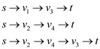

Maximum- Flow Min-Cut Problem
The dual of the linear program for the maximum flow as explained in line 29.47 to 29.50, has to be written. Also, it is to be presented as the minimum cut problem. For this, below is given a brief idea of maximum flow and minimum cut in any flow network.
A flow network is nothing but a directed graph of vertices and
edges. Each of the graph edge has a capacity. The capacity defines
the data value that can go through that edge. The capacity is
always greater than 0. One more thing is that if there is an edge
going from a vertex  to
vertex
to
vertex , then no
edge can go from to
.
, then no
edge can go from to
.

Maximum Flow:
In the above diagram, vertex s is the origin and the vertex t is the sink or destination. The capacity of each edge is shown alongside the edge.
Now the possible flows paths from the source to destination can be:

There might be a few more flow paths as well. The maximum amount of possible flow through a path is equal to the least capacity of an edge.
For example in the first flow path , the
maximum flow would be 12.
, the
maximum flow would be 12.
Minimum Cut:
A cut in a network is the collection of network edges that, when deleted or ignored from the network stop the flow of data from the source to sink. Amongst the set of cuts the one that has the minimum capacity is known as the minimum cut.
For example:
In the above graph, the possible cuts are:
These cuts are as shown below in the graph:
Removal of any of the given set of edges would leave the network disconnected and reaching destination from source would not be possible either way.
In the possible cuts of the above network the cut has the
least capacity and that is
has the
least capacity and that is  .
v2v1 is assigned a capacity 0
because that is in the reverse direction of sv2
and v1v3.
.
v2v1 is assigned a capacity 0
because that is in the reverse direction of sv2
and v1v3.
So, this is the minimum cut for the above mentioned network.
Dual of a linear program is the mirror image of itself. If dual is found for the program that is already a dual of some linear program that yields the linear program. The original form of the linear program is known as the primal form.
The dual for the linear program of the maximum flow problem actually simulates the Maximum-Cut-Minimum-Flow theorem. In writing the dual of a linear program, most convenient practice is to write the original equation in a form that is more aesthetic than the primal form.
This could be accomplished by reducing the number of constraints so that the in creation of the dual program, few variables have to be defined. Sometimes it might tend to the occurrence of many new variables in the primal equation.
To make this happen this, the flow network can be thought of as a collection of paths, through which the flow is travelling, rather than a collection of edges. This would diminish the number of constraints in the program. Now the conservation constraints can be ignored in the program.
Now keeping the above discussion in mind, in the creation of dual, a variable is considered for path from source of the network s to the target of the network t. P is denoted as the set of path, for specifying how much flow is along the path p.
Now the equations take the below form:
Maximize … … (1)
Subject to the condition
… … (2)
… … (3)
Minimum-Cut Formulation:
Now as the linear program of the maximum flow has been expressed into the simpler terms, it is evident that there was only one new variable introduced in the modified form of the primal. So in the dual form, only one new variable per edge of the network would be used.
Consider the new variable in the dual form be. For every
edge of the
network, there is one.
of the
network, there is one.
The linear program would now be as below:
Minimize
Subject to condition
;
 ;
;
Now, have a deeper understanding of the dual of the maximum flow linear program. The variable augments a weight to each of the edge. This weight can be thought of as the “length” from source to destination.
Now to find the minimum cut the flow has to be minimized. So, the intention over here is to find the path that has the minimum flow. For this the objective function is intended to find the minimum path. The same is the yield of the Maximum-Flow-Minimum-Cut theorem.
Now, the objective function is the subject to the constraints that for every path that is constituted of the edges the minimum value is one unit. That means the source and the target are always separable or it can be said that they are always different nodes of the network.
Another constraint is that the value of the variable for any edge has to be either 0 or any positive integer. This ensures that the capacity can never be negative and that is what the basic rule for capacity of the flow network says.
This way, it can be concluded that the dual of the linear program of the maximum flow of a network yield the linear program that represents the minimum cut for the same flow network.
Minimum-Cost Flow Problem
Minimum cost flow problem is the way of finding the path with least possible cost that leads a flow data from the origin to the destination.
This problem has certain real life applications. Some analogies to this are the telecommunication networks, goods transportation system and many others.
This problem is just an extension in the maximum flow problem. All the things that are in the maximum flow problem do exist in the minimum-cost flow problem. In this there is a new real valued function added. This new function is cost.
Cost is associated with every edge just like the capacity. Another thing associated with the network is the flow demand; the amount of flow that is to be moved. The cost is negotiated according to the flow demand.
So, the objective in this is to minimize the cost defined by the function
This should be achieved with conformation to the flow and the capacity constraints for the flow network.
The diagram above shows an example of the problem. The capacity and the cost of each of the edge are written alongside the edge. For instance the capacity of the edge from vertex s to vertex x is 5 and the cost of moving the flow is 2.
Now suppose that the demand is 4 units.
So, the objective is to find the path through the network that these 4 units can be moved from s to t.
The diagram above shows a remedy to the problem. In this 2 units
of flow are being sent from s to x and 2 units are
from s to y. From x the flow is bifurcated; 1
unit goes to t directly and 1 unit is sent to y. This
is done because the cost of moving the flow through  is more
efficient than moving it through. But
because the capacity of restricts
the flow going through that, so after exhausting the flow limit of
the remaining flow is sent through.
is more
efficient than moving it through. But
because the capacity of restricts
the flow going through that, so after exhausting the flow limit of
the remaining flow is sent through.
Now the flow to be moved from y is 3 units. This is the
sum of the flow reaching from
and.
The flow conservation obligates the 3 units to leave node
y.
So, 3 units are sent to t from y.
The linear program representing this problem is formulated in 29.51-29.52 (refer to the section 29.2 of the textbook).Dual of Minimum-Cost Flow Problem:
Dual of a linear program is the mirror image of itself. If dual is found for the program that is already a dual of some linear program that yields the linear program. The original form of the linear program is known as the primal form.
Since in the given primal there are constraints
and  variables.
They are as below:
variables.
They are as below:
1. For each of the nodes there is a constraint of flow conservation.
2. An upper limit constraint for each of the edges.
3. For each of the edge there would be one variable.
So the required dual must have constraints
and
variables.
That would be:
1. For each of the node one variable representing the node that
is
for each .
.
2. One variable for each of the edge that is .
.
3. One constraint for each of the edges.
So, the dual program would be of the below form.
Maximize
Subject to condition
Interpretation in terms of flows and graph:
It is obvious that the min cost flow problem is deeply related to the maximum flow problem. The only difference is the addition of cost and demand in the network.
The objective in this problem is to find the flow with minimum cost. The amount of flow that is to be migrated from source is already negotiated in the problem.
This problem has a deep resemblance with the single source shortest path problem. In that the objective is to find the least possible cost of visiting all the nodes of the graph from a given node.
All possible paths from a node to all other nodes, that are not previously visited, would be checked. The paths with the least possible cost would be considered and all other would be discarded just like they do in single source shortest path problem.
However, the flow going out of any vertex, can be bifurcated to achieve the optimum cost of moving the flow from that vertex to the target. That can later be united at some eventual vertex on the way. The reason behind this is that a flow through any edge cannot exceed the capacity of that edge. Keeping this in mind the flow can be forked so that the accomplishment of minimum cost and the flow movement can be done together.
This problem can be thought of as the single source shortest paths problem, in which the source of the network must be considered the node that the paths are to be searched from.
Now as no anti-parallel edges are there so there would be nodes included other than the source and the target and there would be only one path possible between two nodes. The cost of visiting that edge would be equal to the cost function of the same edge.
So, the above discussion can be recapitulated to show the minimum cost flow problem in terms of graphs and flows as below:
Minimum cost problem is a set of shortest paths (least cost path) from one node to another in the graph (flow network) that constitute the cheapest path from origin node (single source) to target node.
If this statement is put into the form of a mathematical equation it yields the same formula that is used to get the minimum cost flow in a network.
Weak Duality for Maximum-Flow Problem
Minimum cut is the thing that can be considered as the weak duality for the maximum flow problem. Before getting into this, a brief understanding of maximum flow and the minimum cut is required.
A flow network is nothing but a directed graph of vertices and edges. Each of the graph edge has a capacity. The capacity defines the data value that can go through that edge. The capacity is always greater than 0. One more thing is that if there is an edge going from a vertex v1 to vertex v2 than no edge can go from v2 to v1.
Maximum Flow:
In the above diagram, vertex s is the origin and the vertex t is the sink or destination. The capacity of each edge is shown alongside the edge.
Now, the possible flows paths from the origin to destination can be:
There might be a few more flow paths as well. The maximum amount of possible flow through a path is equal to the least capacity of an edge.
For example in the first flow path, the
maximum flow would be 12.
Minimum Cut:
A cut in a network is the collection of network edges that, when deleted or ignored from the network stop the flow of data from the source to sink. Amongst the set of cuts the one that has the minimum capacity is known as the minimum cut.
For example:
In the above graph the possible cuts are:
Removal of any of the given set of edges would leave the network disconnected and reaching destination from source would not be possible either way.
In the possible cuts of the above network, the cuthas the
least capacity and that is. is assigned
a capacity 0 because that is in the reverse direction of and
.
So, this is the minimum cut for the above mentioned network.
Dual program:
Dual for any linear program is the mirror image of itself. If dual is found for the program that itself is a dual of some linear program that results in the original linear program. The initial form of the linear program is known as the primal form.
The dual for the linear program of the maximum flow problem actually simulates the Maximum-Cut-Minimum-Flow theorem.
In writing the dual of a linear program, most convenient practice is to write the original equation in a form that is more aesthetic as compared to the primal form.
This is accomplished by reducing the number of constraints. This ends up in the creation of few new variables. Sometimes it might tend to the occurrence of many new variables in the primal equation.
To make this happen this, the flow network can be thought of as a collection of paths, through which the flow is travelling, rather than a collection of edges. This would diminish constraints in theprogram. Now the conservation constraints can be ignored in the program.
Now keeping the above discussion in mind, in the creation of dual, a variable is considered for path from source of the network s to the target of the network t. P is denoted as the set of path, for specifying how much flow is along the path p.
Now, the equations take the below form:
Maximize
… … (1)
Subject to the condition
 … … (2)
… … (2)
… … (3)
Minimum-Cut Formulation:
Now as the linear program of the maximum flow has been expressed into the simpler terms, it is evident that there was only one new variable introduced in the modified form of the primal.
So in the dual form, only one new variable per edge of the network would be used.
Consider the new variable in the dual form be. For every
edge of the
network, there is one.
The linear program would now be as below:
Minimize
Subject to the condition:
;
;
Now, have a deeper understanding of the dual of the maximum flow linear program. The variable augments a weight to each of the edge. This weight can be thought of as the “length” from source to destination.
Now to find the minimum cut, the flow has to be minimized. So, the intention over here is to find the path that has the minimum flow. For this the objective function is intended to find the minimum path. The same is the yield of the Maximum-Flow-Minimum-Cut theorem.
Now, the objective function is the subject to the constraints that for every path that is constituted of the edges the minimum value is one unit. That means the source and the target are always separable or it can be said that they are always different nodes of the network.
Another constraint is that the value of the variable for any edge has to be either 0 or any positive integer. This ensures that the capacity can never be negative and that is what the basic rule for capacity of the flow network says.
This way it can be concluded that the dual of the linear program of the maximum flow of a network yield the linear program that represents the minimum cut for the same flow network.
Weak Duality Formulation:
Duality in linear programming is of two types:
1. Weak Duality
2. Strong Duality
For the instance, only Weak duality would be discussed over here.
Consider that there exists a linear program of the form:
Maximize

Subject to

And it is dual:
Minimize
Subject to:

Suppose both of them are viable.
Now, consider be viable
for primal and  be viable
for dual form. This implies that:
be viable
for dual form. This implies that:
In simple words, the objective function of the primal form of the linear program has got an upper limitand that is the objective function of the dual form of the same linear program.
Now, the weak duality is proved for the maximum flow and the minimum cut.
Consider that  is a flow a
network and is minimum
cut of the network.
is a flow a
network and is minimum
cut of the network.
So it is to be proved that,
As it is known that the flow data from thesource to destination is always equal to the difference of the flow in the one direction and the reversedirection.
So,
Now, it is already evident that the flow through any edge is always less than or equal to the capacity of that edge.
So,
For a particular instance,
Now, as the flow is always nonnegative value,
And that proves that maximum flow linear program is bounded by its dual that is the min-cut manifestation.